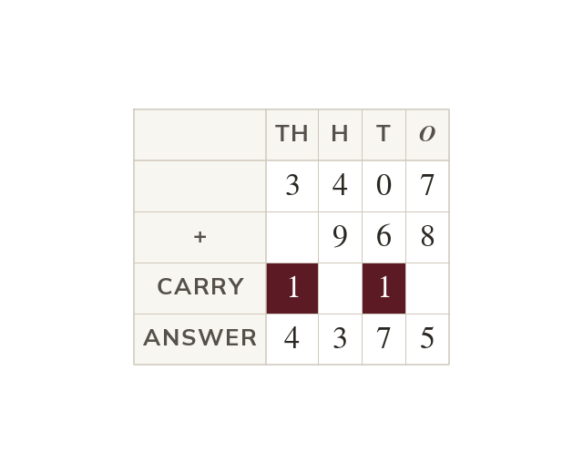

Place value and carrying
Line up the columns: only digits with the same place value combine. In ten ones carry as into the tens column.
A digit's value depends on its place - in the is hundreds. Only digits of the same place value combine directly, which is why columns are lined up by place before adding. Ten of any place is worth one of the place to its left, so carrying trades ten ones for one ten (or ten tens for one hundred, and so on).